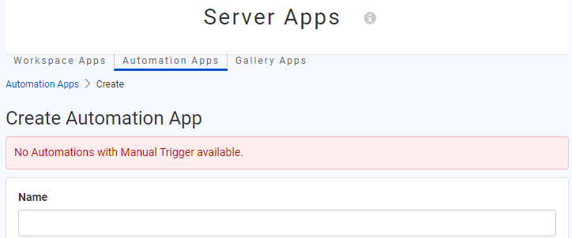
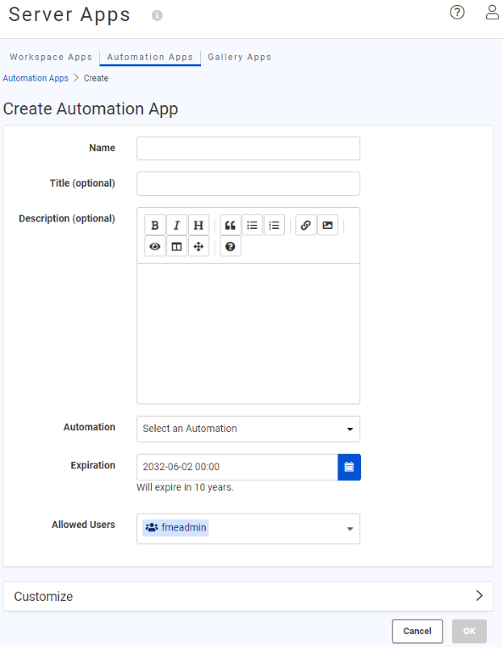
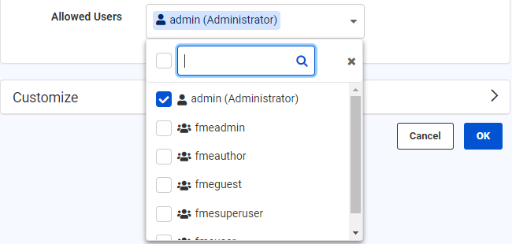
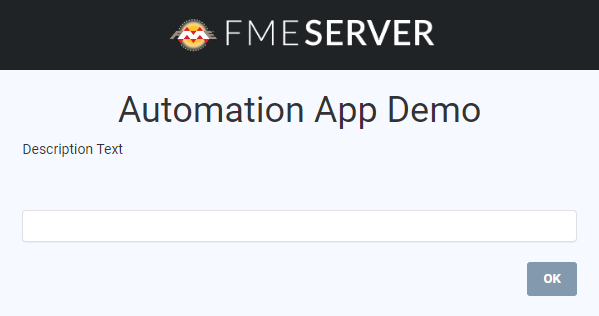
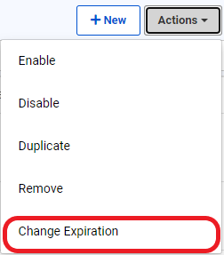
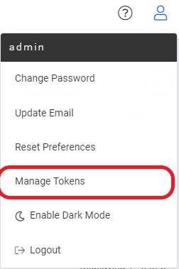
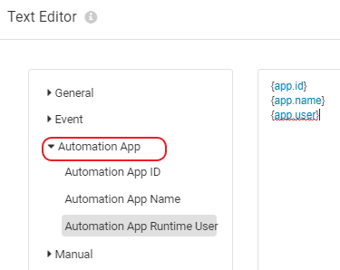
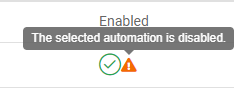
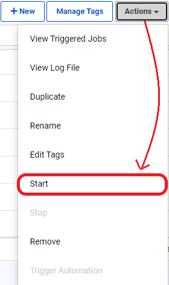

Automation Apps allow authorized users to manually trigger Automations via a webpage.
When you create an Automation app, FME Server will generate an app page with a valid token that includes the necessary permissions. The app is shared as a URL and may be presented through a customizable web page. By building a Gallery App, you can provide users with access to multiple Automation Apps, workspace apps, and other links from a single, customizable web page. We'll cover Gallery Apps in the next unit.
The ability to publish Automations as FME Server Apps enables users to run complex workflows on demand with configurable input parameters. Before 2022.2, FME Workspace apps could only trigger a single FME workspace. With Automation Apps, we can now trigger more advanced, multi-workspace, and multi-action workflows. This will benefit end-users and allow complex workflows to be created, shared, and leveraged across organizations.
You can create an Automation App by clicking the New button on either the Build Automation App page or the Manage Automation Apps page. You can find both pages under Server Apps on the side menu panel. Please note that Automation Apps can only be created if the automation trigger uses a manual trigger. Select Build Automation Apps from the drop-down menu:

You will see an error message on the Create Automation App page if you do not have any Manual Trigger Automations.

You will need to configure a few parameters when building your Automation app:

Name: Provide a name for the app. The name appears on the run page for the app and will also become part of the URL for the run page. App names are case-insensitive. The name will appear as <Name> Automation app on the run page.
Title (optional): The title will be displayed at the top of the app in the browser tab
Description (optional): Provide a description or additional information for the app. The text body will be located below the name on the run page.
Automation: Select an Automation with Manual Trigger. Ensure the Automation is started.
Expiration: FME Server creates a token to authenticate the Automation app. The token automatically has the necessary permissions required for the user to run the application. You can set the expiration date for the security token of the app. After the token expires, the Automation app will no longer run. The default expiration is ten years from the current date.
Allowed Users: All Automation Apps require the creator to specify which users are allowed access to run the application. When users go to the FME Server Automation app URL, they must log in to FME Server first before seeing the run app page. Access to the app is restricted to authorized FME Server Users who belong to the specified Roles.


Automation Apps enable complex workflows to be run on demand with configurable input parameters. The manual trigger in Automations can now be configured to prompt you with a list of parameters generated from the existing manual keys. The manual keys will appear as parameters on the Automation Apps page. To create manual keys, you will need to go to Automations > Manual Trigger > Output Keys > Success > Manual Keys > Manage Keys.

Once you select Manage Keys, a pop-up window will appear. The left panel allows for key management, and the right panel allows for key parameter definitions. To define Manual Keys, click the + button to add a Key. The Manual Keys supported in FME Server 2022.2 include Choice, Color, Date Time, File/URL, Message, Number, Password, Text, Yes/No, and Geometry. Key parameters include Key (required), Prompt (required), a Required checkbox, Default Value (optional), and any additional parameters based on the Key type. Keys must have unique names. In the left panel, you can arrange the ordering of keys with the up and down arrows or by drag and drop.
The left-hand side of the Manual Keys Editor is where all your created parameters are shown, as well as options to add new ones, reorder, and delete. The right-hand side is where you can find the parameters for the newly created or selected Keys.

Like Workspace apps, Automation Apps allow for the flexibility of customizing the appearance of your application. The look and feel of your Automation app can be tailored to your organization’s colors, logo, and images. At the bottom of the Customize section, you also have the option to Run Immediately. This is to specify the app to run as soon as its URL is invoked without displaying a run page. The parameters below used to customize the application run page are all optional. The Icon, Logo, and Banner parameters only support JPEG and PNG file formats.
Browser Icon (optional): The icon will be visible in the browser tab. There is a 300 KB file size limit for icon images.
Heading Background Color (optional): Configure the banner's background color at the top of the app page. It appears behind the Heading Banner if transparent.
Heading Logo (Optional): This will appear above the Heading Banner and/or Heading Background Color. There is a 1 MB file size limit for the image.
Heading Banner (optional): This image will appear at the top of the app page. If transparent, it appears over Heading Background Color. There is a 1 MB file size limit for the image.
Footer Text (optional): The text appears below the links on the app page.
Footer Logo (optional): This appears beneath the Footer Text and behind the Footer Banner if transparent. There is a 1 MB file size limit for the image.
Footer Banner (optional): An image to comprise the banner at the bottom of the app page. If transparent, it appears over Footer Logo. There is a 1 MB file size limit for the image.
Run Immediately: Option to configure the Automation app to run immediately once the URL is invoked without displaying a run page.

Here is an example of an Automation app with and without a customized run page:


Click OK, and a message will indicate that FME Server has created the app and will provide its URL. You may click the Copy icon to copy the URL. To run the app, click the URL. Once your Automation app is created, the security token can be accessed on the API Tokens tab of the Token Management page:
By default, all apps are enabled to run when created. To disable or enable an app, select an app, then select Actions > Disable or Enable from the Manage Automation Apps page.
Like Workspace Apps, you can view or copy the URL from the main Server Apps > Manage Automation Apps page. You can also change the expiration date of an app by selecting the app and choosing Change Expiration from the Actions dropdown menu.


Another option to manage the expiration of an Automation app is via the Token Management page. This is because the expiration is managed by the token that authorizes the app's usage. To access the Token Management page, click Manage Tokens from the User Settings dropdown (top right of the FME Server Web Interface). You should see the token created for your app on the Token Management page. Click it to edit its parameters. You can edit the token description on the page, enable or disable the token (disabling the token will disable your app), and change the expiration date.


Keys enable the Automation author to pass data values from one Automation component to the next. With the addition of Automation Apps in FME Server 2022.2 and newer, three new keys have been added:
Automation app keys become accessible after creating an Automation app from an Automation. Once the app is created, any Action downstream from the Manual Trigger can use Automation app keys as parameters. Inside the Action details, find them in the drop-down menu next to a parameter. The Automation App is listed alongside other types of keys, such as Manual, Event, etc. Expand Automation App to find the three new keys.
Automation app keys may also be selected from the Text Editor's sidebar.


Help shape the future of FME Server Automation Apps by adding product suggestions to our Ideas Forum.